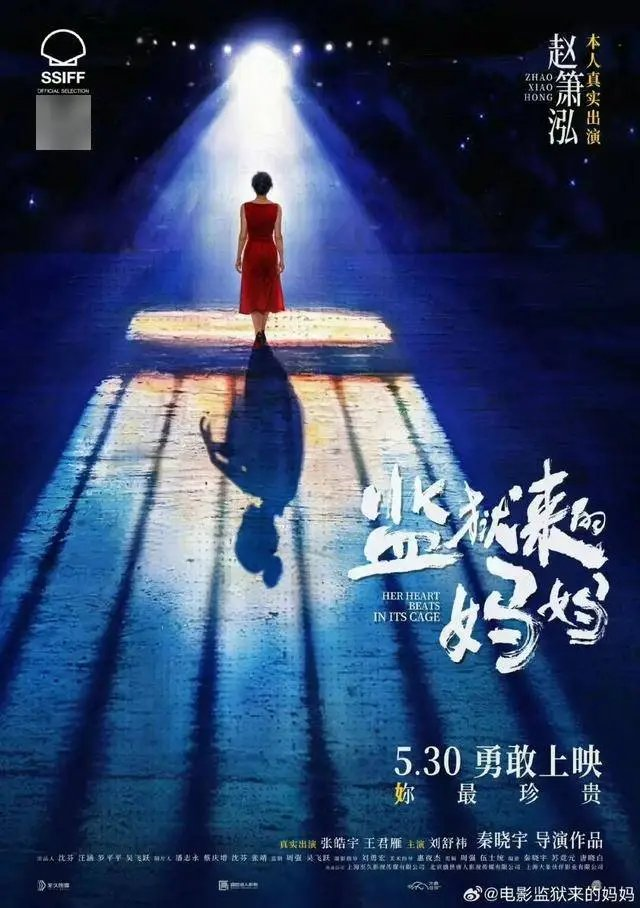

时事评论 · No. 04
谁先拿起石头
你们中间谁是没有罪的，谁就可以先拿石头打她。 《约翰福音》8:7
群众，——尤其是中国的，——永远是戏剧的看客。牺牲上场，如果显得慷慨，他们就看了悲壮剧；如果显得觳觫，他们就看了滑稽剧。[12] 鲁迅《娜拉走后怎样》（1923）

一个名字，两次相反的欢呼
同一个人，同一部电影，公众在不到一年里给出了两次截然相反的反应。
先是欢呼。一位几乎无人知晓的素人，凭一部根据自己真实经历改编、并由本人主演的电影，在一个国际电影节上拿下最佳女主角。[1] 消息传回时，舆论几乎是温情的：恭喜、致敬、「为国产电影争光」。到了母亲节，电影定档，宣传的关键词是「女性力量」，几位知名艺人转发助势。[2]
然后是声讨。有人翻出了她的判决书。一夜之间，潮水反向：她不再是那个「值得致敬的女性」，而成了「一个杀了丈夫、还要靠这桩罪行博取同情与名利的女人」。先前为她转发的艺人接连发声明切割，她的社交账号被平台限制。[2] 同一个名字，先被高高举起，又被狠狠摔下。
这里值得停一停，问一个看似简单的问题：在这两次相反的反应之间，究竟发生了什么新的事实？
答案是：什么也没有。这桩案子早在十六年前就已一审定谳，又经二审终审、维持原判；判决书一直静静躺在那里，措辞一字未改。她服满了刑、早已出狱。从「欢呼」到「声讨」，没有任何一桩新的事实降临——变的不是事实，是公众愿意相信的版本。[3]
一个细节足以见出这场审判建立在何等流沙之上：在那些义愤填膺的转述里，她的刑期一度被广泛传成「十年」。[2] 而判决书写得清清楚楚，是十五年。[3] 一群人据以审判她的「事实」，连最硬的那一项——刑期——都是错的。这不是细节上的疏忽，它预示了整件事的结构：这是一场关于真相的审判，而审判者并不真的关心真相。
三个赵晓红：法律的、电影的、舆论的
要看清这场审判的空转，得先把同一桩事的三个版本并排放在一起。它们讲的是同一组物理事实，却讲成了三个不同的故事。
法律的版本：据终审裁定书认定，案发当晚，她与丈夫因「支床」这样的琐事争吵、继而厮打。[3] 值得注意的是，判决书并未抹去当晚的暴力：据她本人供述并经法院记录在案：丈夫「用拳头打她头」，「强行把她拉下床，用脚踢她后腰」，她「被打急了」才往外跑，跑到客厅顺手抓起餐桌上的水果刀，丈夫扑过来时，她「下意识挥了一下」，刀扎进对方胸部。[3] 此后她让人报警、施救、如实供述，被认定为自首。但法院最终将这一切框定为「夫妻因琐事发生争执、厮打」，并以「从捅刺的部位和力度看，伤害他人身体的犯罪故意明显」，认定为故意伤害罪——而非她上诉时主张的过失致人死亡——计入自首从宽，判处有期徒刑十五年。[3] 值得一并记下的是：案卷中几位邻居的证言都称这对夫妻「平时关系尚可」「因琐事吵架，但吵后就好」。[3]
电影的版本：据报道，影片以「长期遭受家暴、忍无可忍而反抗」为叙事内核。[2] 这是一个比法律版本强烈得多的故事：它把当晚那场具体的、升级为致命的冲突，叙述为一段漫长压迫的最终爆发。
舆论的版本：它最初全盘接收了电影版（于是有了欢呼），又在判决书出现后反转到另一个极端：既然判决书「只写琐事争执、没认定长期家暴」，那么她就是在撒谎，是在用一个虚构的受害者身份骗取同情与奖项，于是有了声讨。
现在把三者对齐，会看到一件要紧的事：分歧几乎不在「发生了什么」，而在「该用什么框架去命名它」。那些物理事实——被打头、被踢后腰、抓刀、致死——三个版本大体都承认。法律承认丈夫先动手，电影也没有凭空捏造一个施暴的丈夫（那一夜他确实先动了手），舆论同样不否认这些动作发生过。真正分裂三者的，是同一组事实被装进了哪一个范畴：是「夫妻琐事争执」，还是「长期家暴的反抗」？
而「家暴」恰恰不是一个像「身高一米七」那样可以径直读出的事实，它是一个需要框架去裁切的范畴。后腰上的一脚是确凿的物理事件；但「这构成家暴」「这构成长期家暴」，则是一个判断，需要一套关于何为家暴、多频繁算长期、单次冲突是否够格的范畴框架去裁定。而这套框架本身是流动的、被时代和立场塑造的：案发那年，公众对「家暴」尚无今日这般清晰的话语；[4] 十几年后，它成了舆论场里最锋利的标签之一。
认清这一点，才能解开舆论后半程那个最大的误会：以为判决书「只写琐事争执、没认定家暴」，就反驳了电影的「长期家暴」。其实两者根本不在同一描述层级，谈不上谁反驳谁。「因琐事争吵」说的是某一次冲突的导火索，「平时关系尚可」是邻居对一对夫妻外部相处的断面观察，它们都是局外人可见的、片段式的事实；而「是否长期遭受家暴」，是关于一段亲密关系内部权力结构的整体判断，恰恰是邻居看不见、判决书也无意去裁定的东西。一对夫妻完全可以在外人眼中「为琐事拌嘴、转头就好」，而在关起的门内长期失衡。所以判决书对家暴的沉默，不是否认；它只是没有、也无须在那个层级上说话。文书与电影可以同时为真，也可以同时不实，但有一点是确定的：前者的措辞，并不构成对后者的驳斥。
这就解释了 §1 那个谜题：公众以为自己在判决书里「发现了真相」，其实他们只是从一个建构（电影的版本）切换到了另一个建构（他们自己的版本）。法律所认定的，从来不是「宇宙间到底发生了什么」这个不可复得的实质真相，而是「证据在特定规则与证明标准下能够证立的版本」。法律真实，不等于实质真实。判决书没有、也无力裁定「她的婚姻是否长期不幸」；它只裁定「在举证规则下，能证立的罪名与情节是什么」。
这里需要立刻按下一个诱人的、却是错误的滑坡，也正是舆论后半程跌进去的那个：「既然判决书不支持长期家暴，那她（和电影）就是在骗。」这一步看似锋利，实则又是一次范畴混淆。说电影的「长期家暴」缺乏案卷旁证，是一回事；据此判定「她在撒谎、她不值得同情」，是另一回事。指出三个版本各为建构，目的不是要拆穿其中某一个、好让另一个加冕为「真相」——恰恰相反，连舆论自以为最冷静客观的那个「她其实是冷血凶手」的版本，也同样是一个建构，一个根据「我们此刻想收回同情」的需要而拣选出来的框架。三个赵晓红，没有一个是她本人；每一个都是某种需要的产物。
已经偿清的债
在追问「公众究竟在审判什么」之前，必须先确立一个被声讨声浪整个淹没了的事实：就法律称量的那一份罪责而言，她早已偿清。
故意伤害罪，十五年，计入自首从宽；服刑期间认罪服法、确有悔改，两次获减刑；刑满出狱。[3][5] 这里要做一个区分：有一种罪责，是可计量、有边界、有终点的，它正是法律所处理的那种。「罪责刑相适应」这一原则的全部尊严就在于此：罪有其分量，刑有其止境，偿付一旦完成，账即结清。「刑满释放」四个字的意思，不是「我们开恩放过你」，而是「你已付清，你重新是一个不欠债的、完整的人」。一种主张「杀过人就该一辈子抬不起头」的观念，是一种被现代刑罚文明明确拒绝了的、无限报应的血债观。
由此可以注销掉 §2 里那场关于「她到底是不是完美受害者」的争论：不是因为它无趣，而是因为它在道德账簿上早已被结清。无论她属于「三个版本」中的哪一个，法律已经把全部情节——丈夫先动手、她持刀的故意、她的自首与施救——一并称量进了「故意伤害＋自首从宽＝十五年」这个数字里，并已执行完毕。公众如今拿「她或许没那么值得同情」来收回同情、追加惩罚，等于是在宣布：法律给她定的价我不认，我要按我此刻的情绪重新定一次——而且这一次，没有上诉，没有刑满，没有终点。
这里要诚实地搁下一桩事，免得显得回避。这部电影本身确有法律上的瑕疵：影片在赵晓红服刑期间即开机拍摄，而依现行规定，正在服刑、被剥夺政治权利的人员不得参与营业性演出与影视制作；据报道，影片的报批程序也存在违规。[14] 但这恰恰不是本文要评的事，理由有二。其一，那是一桩有明确主管机关、可依法处理的程序违法，自有电影主管部门循法定渠道追究，已无需亿万围观者代为定罪；其二，也更要紧，违规拍摄的责任主体，是批准拍摄的机构与决定开机的制作方，而非一个被安排出演的服刑者。一部电影违反了拍摄审批的规定，是制作方的问题；它不能被折算成「这个人该被声讨」的理由。把一桩制作流程上的违法，转嫁为对当事人本人的道德追讨，又是一次认错了对象。
这种冲动并非中国独有。英美法系里有一类所谓「山姆之子法」，专门处理「罪犯从讲述自己罪行中获利」的问题。但耐人寻味的是：这类法律的正当目的，从来不是「不许罪犯获利、不许他翻身」，而仅仅是把犯罪所得转去赔偿受害者；而即便是这一有限的目的，其严厉版本也在一九九一年被美国最高法院以违反言论自由为由判为违宪：法院认定，一个人讲述自身罪行的言说，不能因其内容而被惩罚。[6] 连最有理由限制「罪犯获利」的法律，都只追到「赔偿受害者」为止、且仍保护其言说的权利；两相对照，本案舆论所要的，是远超出此的东西：让她永不得言说、永不得被看见、永不得翻身。
而且，追讨这笔「债」的，根本不是债权人。被害人一方的亲属，若有未平的伤痛，那是另一个层面的、真实而值得尊重的问题，本文无意也无力裁断。但此刻在网络上举起石头的，是亿万与这桩案件毫无干系、未受任何人授权的围观者。你既不是债权人，她也不欠你；你凭什么追讨一笔早已还清的债？
我们需要一个罪人
于是问题被逼到了它真正的位置上。如果（§2）所谓真相不过是框架之争，公众无从据证据判定；如果（§3）债已偿清，追讨者又非债权人——那么这场声势浩大、且没有终点的审判，它的能量究竟从何而来？
不妨把整件事在伦理上拆开，逐段称量，看它到底有没有一处过错，配得上这样的愤怒。杀人那一段，是一次在暴力冲突中失控的、可悲的致死，已被一套正当程序称量并了结；它有真实的道德重量，但那重量已被偿付。坐牢那一段，从任何承认「惩罚—改造—回归」的刑罚伦理看，都近乎正面：她做了这个制度要求一个犯错者做的全部事。拍片与获奖那一段，是一个已恢复完整道德地位的人重新进入社会、从事创作并获得评价的正当权利；把「她曾是罪犯」当作剥夺她余生表达与谋生的理由，恰恰违背了「债已偿清」。何况一个表演奖项称量的是银幕上那段表演的完成度，而非为一个人的过往颁发道德合格证；艺术评价与道德评价本是两个相互独立的领域，把奖项读成「对杀人的洗白」，混淆了二者。她要被洗白，前提是她还「黑」着；可她在法律上早已偿清，本就无须任何人来漂白。
那么，是否还剩下最后一处疑点：电影那个「长期家暴」的叙事，是否对已经无法辩驳的死者构成了某种不正义？这是整件事里唯一看似还站得住的伦理追问，但它经不起推敲。死者本人已不再是法益的主体；可转译的承受者，要么是其亲属，要么是「公共真相」本身。而这两者，在本案的审判声浪里都无人真正主张。退一步，纵使采纳「人可被身后之事亏欠」的最强立场，其成立的前提也是「污名不实」；可那一夜丈夫确实先动了手，电影的指控有一个真实的核，被夸大的只是「长期」的幅度。这是戏剧化的放大，落在艺术改编的正当空间之内，且其责任在创作方对叙事框架的选择，而非她个人。[7] 连这最后一处疑点，也倒下了。
这才是整件事最反常的地方：逐段称量下来，没有任何一处过错，与那场审判的能量是相称的。愤怒声讨的几段，恰恰是伦理上站得住的；唯一沾边的疑点，既无承受的主体、又不为声讨者所关心。当一场道德审判，找不到一桩与它的烈度相称的道德罪责时，它真正的燃料就暴露了出来。它从来不是为了纠正一个过错，因为没有那个过错。
社会学早给过一个冷峻的解释。涂尔干说，犯罪是「正常」的，甚至是社会所必需的：正是通过对罪人的指认与谴责，一个共同体才得以一次次重新确认它共享的道德边界，并从中生产出「我们是好人」这一集体的安心感。[8] 基拉尔则把这台机制看得更透：共同体会把弥散在它内部的、人人有份的暴力与不安，集中投射到一个被拣选出来的牺牲者身上，再借由对他的一致谴责，获得短暂的团结与净化。[9]
这两束光照回本案，那座一直在追问的须弥便显形了。罪——不是法律意义上那种可清偿的罪责，而是更弥散、更不安、人人难以自外的那种——本就潜在于每一个人心里。正因为它弥散而难以承认，人才如此需要一个罪人：需要把那份共同的、令人不适的罪，集中安放到一个具体的、有名有姓的人身上，然后通过审判她，把它从自己身上驱赶出去。在这个意义上，赵晓红不是被审判的对象，而是被需要的镜子——公众借着谴责她，赦免了自己。
这也解释了 §1 那场反转何以如此暴烈，以及舆论为何需要一个「永不结案」的罪人。法律的审判有终点，因为它的逻辑是清偿；而替罪羊机制不能容忍终点。一旦那个人「了结」了、被允许走了，镜子就碎了，共同体就失去了确认自身清白的器具。舆论之所以拒不接受「她已偿清」，正因为它要的从来不是正义，而是一面永远不被打碎的镜子。它先需要一个圣女，来确认「我们崇尚女性的力量」；继而需要一个恶魔，来确认「我们没有被骗、我们明察秋毫」。两次，她都只是工具，从不是目的。
这套机制极少以赤裸的面目出现，它总在为自己寻找体面的说辞，而且懂得步步退守。它会说：我们并不反对刑满之人重新融入社会，我们只是反对一部电影洗白杀人犯，反对一个有前科者成为影响青少年的公众人物。这话听上去通情达理，可每一层都经不起按一按。所谓「洗白」，偷换了概念：电影从未否认她杀过人、坐过牢，它只是把走到那一步的缘由讲得偏向她；这是诠释之争，不是把有罪说成无罪。何况，对叙事是否失实的追究，对象应是选择了这个框架的创作者，而非那个被讲述的人。批评一部电影拍得不诚实是一回事，要求那个人从此消失，是另一回事。至于「影响青少年」，它与「不反对再融入社会」自相矛盾：演员融入社会的方式，本就是出现在公众面前；说「你可以回来，但不可以被看见」，等于划下一条二等公民的线，给一个法律已宣告其偿清的人，追加一道没有刑满之日的社会性放逐。
到了最后，这套辩护往往亮出它自以为最硬的底牌：那些劣迹艺人不也被封杀了吗，难道他们不该被封？可这恰恰不是一块可以丈量旁人的中立标尺，它本身就是同一台机器的另一个名字。「封杀」是什么？是一种没有程序、没有刑期、没有「刑满」、也没有复权之路的惩罚，由舆论与平台的情绪共同决定一个人何时可以回来，或永远不能。它把人逐出公共生活，且不设终点。这正是本文从头追究的那种东西：取消了清偿，取消了终点。况且，即便承认封杀在某些情形下尚可辩护，那点正当性也严格系于「当下的、尚未了结的失德」，而赵晓红的罪行遥远、已清偿，她当下并无任何劣迹可言。把一个服刑期满的公民，等同于一个当红的失德艺人，不是在适用一条原则，而是在借一桩本就可疑的旧例，为一次新的放逐寻找先例。当人们举出「劣迹艺人」来证明放逐的天经地义，他们其实是在不经意间承认：用舆论施加一场没有尽头的社会性惩罚，在我们这里已经是何等自然、何等不被追问的事。而一件事越是自然到无人追问，就越是需要被重新看上一眼。
卡拉马佐夫的镜子
一百多年前，陀思妥耶夫斯基写过一场审判，可以拿来量一量今天这一场。
《卡拉马佐夫兄弟》里，德米特里被控弑父。证据链条环环相扣——他扬言过要杀父、案发时在场、身上沾血、手里有钱——法庭据此判他有罪。然而读者知道，他并没有弑父，真正的凶手另有其人。陀思妥耶夫斯基用整整一场审判演示了：证据可以编织出一个滴水不漏的「法律真实」，而它与「实际发生了什么」南辕北辙。[10] 这正是 §2 那个古老命题的文学预演：法律所能抵达的，永远是证据所能证立的版本，而非事实本身。
但两场审判之间，有一个精准的镜像反转，而那反转里藏着最冷的东西。德米特里是实质无罪、却被法律定罪；赵晓红则是已经偿清、却被舆论要求永远偿付。把两者并置，不是要说她和德米特里一样无辜——她确实持刀致人死亡，这一点不容混淆；可以并置的，是另外两件事：审判的真相从不在被告身上，而在审判者身上；以及，罪是共同的、无法被干净地归属给某一个人。
还有一层更冷的对照。陀思妥耶夫斯基笔下，德米特里的受难是有救赎的：苦难能够净化，他在那场冤判里精神上获得了重生。这是陀氏的世界观：受苦尚能通向某种意义。可赵晓红在偿清一切之后所遭受的第二重审判，[2] 没有任何救赎可言。它纯粹是生产性的，它唯一的产物，是无数围观者的道德优越感。我们这个时代，完整保留了「审判一个罪人以确认自己清白」的古老机制，却丢掉了陀思妥耶夫斯基曾赋予受难的那个救赎维度：我们仍然要罪人受苦，却不再相信受苦能净化任何人，我们只是要看着她受苦。德米特里至少还被一场有终点的审判「了结」了，而赵晓红被抛进的，是一场没有判决、也没有终点的围观。这不是审判的进步，是审判的退化。
于是回到那个最古老的场景：一个女人被众人围在中间，人们手里攥着石头，等着一个动手的理由。有人对他们说：你们中间谁是没有罪的，谁就先扔。[11] 那句话的锋利之处，从来不在于宽赦那个女人，而在于它把所有人的目光，从被告席猛地转向了围观席——它说的是：你们要审判的那桩罪，你们每一个人身上都有。
这正是陀思妥耶夫斯基写了一整部书要说的那句话——「每个人对一切人、在一切事上都有罪」。[13] 罪不存在于某一个被拣选出来的罪人身上，它弥散在每一个人心里；正因如此，把它集中安放到一个具体的人身上、再借审判她而将它从自己身上驱逐，才成了一种永恒的诱惑。
而这诱惑之所以甜美，还藏着一层更难承认的东西。举起石头的人，往往自以为站在弱者一边、替正义出手；可他真正尝到的，并非守护了谁的安慰，而是另一种滋味：在那一刻，他站到了可以裁决另一个人、可以宣布她不配再被看见的位置上。他共情的，与其说是任何一个受害者，不如说是那只举石头的手本身，是那种取消一个人的权力。这是一种对权力的共情，而它并不只属于此刻的某一群人；它潜伏在每一个曾因「终于轮到我审判」而隐隐快意的人心里。
她为可以偿清的那一份，已经偿清；而那不可偿清的、共同的一份，本属于每一个举起石头的人。
这场喧天的审判里，没有人真的在审判她。所有人都在借着她，审判并赦免自己。而她，早已付清了她那一份，本可以走了。
石头落地之前，没有人愿意低头看一看自己的手。
- [1] 关于该片在国际电影节获最佳女主角一事，依据公开媒体报道转述，本文未独立核验电影节官方公告及奖项确切名称，故此处不援引具体奖项名目；读者如需确证，请以电影节官方公布为准。
- [2] 关于影片的宣传定位（「女性力量」「长期家暴反抗」）、定档与艺人转发、判决书被披露后舆论反转、艺人发声明切割、当事人社交账号被平台限制、以及导演称网络暴力「不亚于家暴」等情节，均依据 2026 年 5 月间的自媒体与媒体报道转述。此类来源对事实的取舍与表述未必准确（例如刑期一度被误传为「十年」，见正文），本文凡涉及电影叙事与舆论过程的描述，均应视为「据报道」，其确切内容请以影片本身及原始报道为准。
- [3] 本节关于罪名、刑期、案发经过、当事人供述、邻居证言、自首认定等事实，依据《赵晓红故意伤害案二审刑事裁定书》（陕西省高级人民法院〔2010〕陕刑一终字第66号，2010 年 3 月 1 日）；该裁定维持原判，并完整复述了一审（西安市中级人民法院〔2009〕西刑一初字第233号）认定的事实与证据。原判以故意伤害罪判处有期徒刑十五年。文书经由公开数据库存档导入，引用时已转述要点、未誊录全文；正式查证请以中国裁判文书网原始文本为准。当事人本名赵晓红，演艺活动中另用艺名；本文统一使用本名。
- [4] 案发于 2009 年；中国《反家庭暴力法》于 2015 年通过、2016 年施行。此处意在说明「家暴」作为一个公共话语与法律范畴，其清晰度与通行程度随时代变化，而非主张「当年无法可依即不存在暴力」。具体立法时间线请以全国人大公布为准。
- [5] 减刑事实依据《赵晓红减刑刑事裁定书》（西安市中级人民法院〔2013〕西监刑执减字第1175号，2013 年 5 月 24 日）：因服刑期间认罪服法、确有悔改表现（获积极改造若干次），裁定减刑。另据报道其后又有减刑、约于 2020 年刑满出狱；确切出狱时间本文未独立核验，作约数处理。
- [6] 「山姆之子法」（Son of Sam law）指美国各州禁止罪犯从描述其罪行的作品中获利、并将相关收益转作受害者赔偿的法律，得名于连环杀手 David Berkowitz。其纽约版本在 Simon & Schuster, Inc. v. Members of the New York State Crime Victims Board, 502 U.S. 105 (1991) 中被联邦最高法院一致判定违反第一修正案：法律不得因言论「提及犯罪」这一内容而对其施加财产负担。判决同时申明，州政府以犯罪所得补偿受害者具有正当利益——即此类法律的正当目的限于补偿受害者。此后多数州保留了修窄后的版本。
- [7] 关于「死者是否仍是法益／道德地位的主体」，法律上通说认为权利能力终于死亡，死者本人不再享有法益；中国《民法典》第994条对死者姓名、名誉等的保护，其请求权人为近亲属，多数学说据此认为所保护者实为近亲属利益或公共利益，而非死者本人。伦理学上，「人能否被身后之事亏欠」存在未决之争：伊壁鸠鲁一系否认（无主体则无人受损），费恩伯格（Joel Feinberg）等则主张人可拥有「延续的利益」、其在身后被挫败仍构成亏欠。无论采何立场，对一项「污名」可责与否的判断，最终都取决于其是否不实，而非对象能否辩护。
- [8] 涂尔干（Émile Durkheim）关于「犯罪之常态性」与惩罚之社会功能的论述，见《社会分工论》（1893）及《社会学方法的准则》（1895）：犯罪与惩罚通过激起集体的道德情感、重申共同信念，发挥维系社会团结的功能。此处为撮述其要旨，非直接引文。
- [9] 勒内·基拉尔（René Girard）的「替罪羊」（bouc émissaire）机制，见《暴力与神圣》（1972）、《替罪羊》（1982）等：共同体将内部弥散的摹仿性暴力转嫁于一个被拣选的牺牲者，借由对其的一致敌对而重获暂时的团结。此处为撮述其要旨，非直接引文。
- [10] 陀思妥耶夫斯基《卡拉马佐夫兄弟》（1880）第四部审判情节：德米特里·卡拉马佐夫被控弑父，证据指向他，而真凶为斯麦尔佳科夫。佐西马长老「人人对一切人有罪」的教诲贯穿全书，与德米特里「甘愿为众人受难」的转变相呼应。本文以之为度量当下舆论审判的参照，不涉情节细节的逐一复述。
- [11] 《约翰福音》8:1–11，行淫时被拿的妇人。耶稣对围而欲以石击之的众人说：「你们中间谁是没有罪的，谁就可以先拿石头打她。」众人「从老到少，一个一个的都出去了」。引文依通行中文译本，具体字句以所据版本为准。
- [12] 鲁迅《娜拉走后怎样》，1923 年 12 月 26 日在北京女子高等师范学校的讲演，后收入杂文集《坟》。题记所引之后原文续为：「北京的羊肉铺前常有几个人张着嘴看剥羊，仿佛颇愉快，人的牺牲能给与他们的益处，也不过如此。而况事后走不几步，他们并这一点愉快也就忘却了。」「觳觫」（hú sù）意为恐惧战栗。文本依公开通行版本，具体字句以《鲁迅全集》为准。
- [13] 「每个人对一切人、在一切事上都有罪」为陀思妥耶夫斯基《卡拉马佐夫兄弟》中佐西马长老一系教诲的概括（其兄临终的彻悟、佐西马本人的转变均归于此）。此处依通行中译撮其大意，非某一句的逐字直引；确切表述因译本而异。参见 [10]。
- [14] 关于影片在当事人服刑期间开机、以及报批程序涉嫌违规等情节，依据 2026 年 5 月间的公开报道转述，本文未独立核验。所涉规定包括：被剥夺政治权利者于权利剥夺期间的从业限制，以及对在押人员参与营业性演出、影视制作的禁止性规定；具体条文与认定，以电影主管部门及相关法规为准。本文仅就此一问题指出其性质（属程序违法、有主管机关）并将其搁置，不作法律层面的展开。
本文为思想档案中的一则时事评论，写于 2026 年 5 月。文中涉及法律事实者，依据公开的法院裁判文书；涉及电影叙事与舆论过程者，依据公开报道，已尽力标明其性质与限度。本文无意裁断当事人的为人，亦不对其罪责的有无与轻重作法外之评判：它所解剖的，是审判者，而非被审判者。